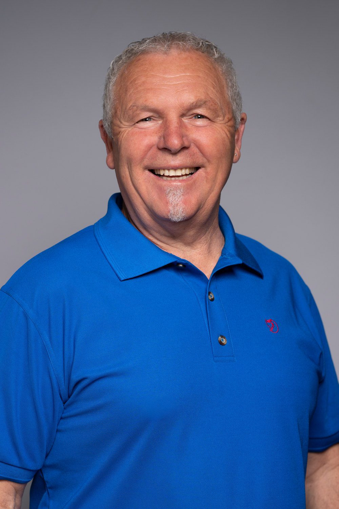
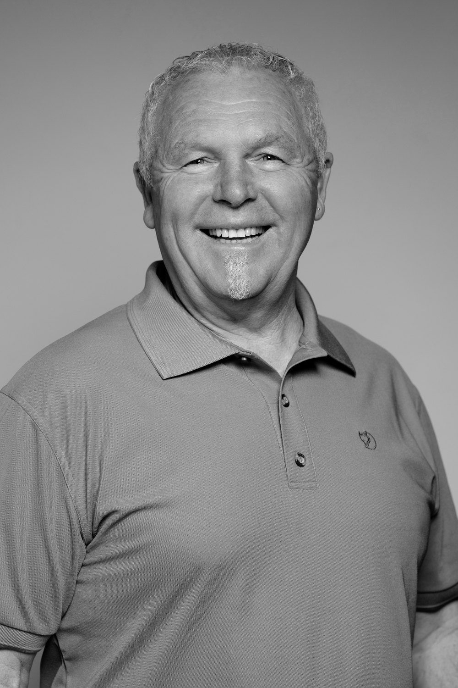
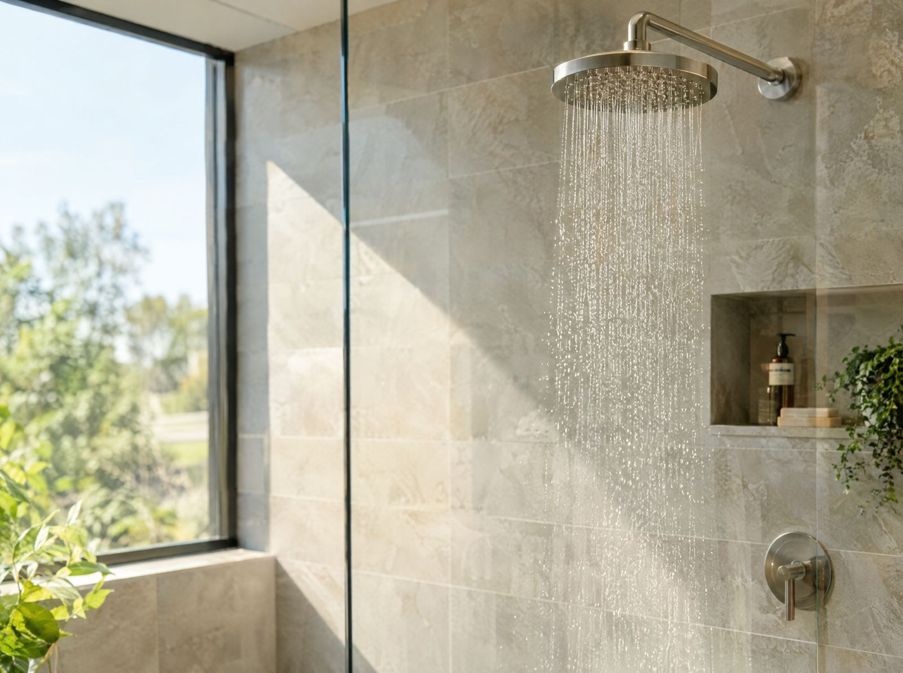
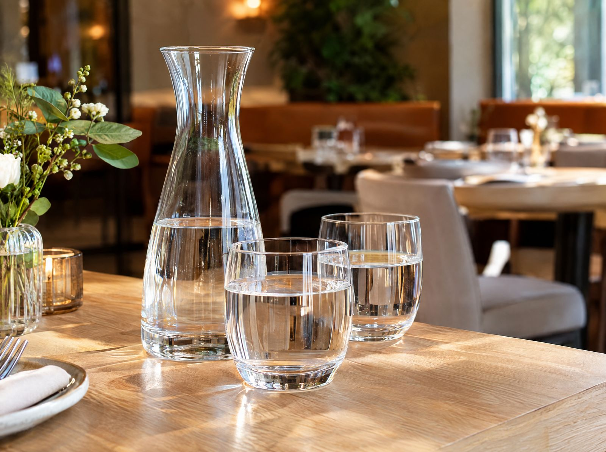
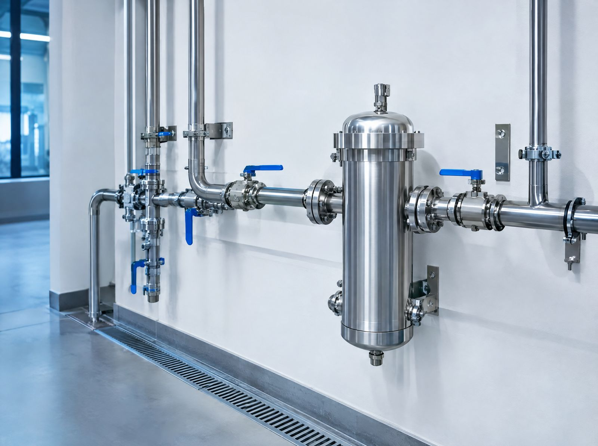
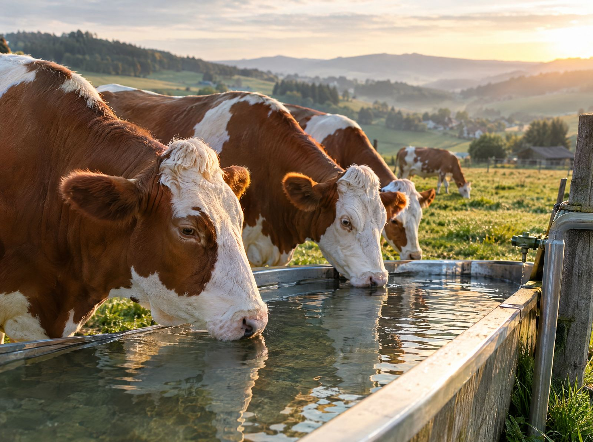

Natürlich belebtes Wasser. Für Menschen, Tiere und Betriebe.
Ich bin Ihr Ansprechpartner für Granderwasser – von der persönlichen Beratung bis zur Umsetzung vor Ort.
- Persönliche Beratung
- Umsetzung vor Ort
- Ohne Chemie & Zusätze


„Ich begleite Menschen und Betriebe auf dem Weg zu natürlich belebtem Wasser – mit echter Begeisterung für das, was Wasser bewirken kann.“
Mein Name ist Uwe Fläschel. Als Handelsvertreter für Granderwasser und Mitglied im BNI Unternehmernetzwerk Rottweil berate ich Privatkunden, Gastronomie, Betriebe und landwirtschaftliche Höfe – persönlich, verständlich und direkt vor Ort.
Wo Granderwasser zum Einsatz kommt
Natürliche Belebung für jedes Umfeld – zu Hause, in der Gastronomie, im Betrieb und auf dem Hof.

Zuhause
Natürlich belebtes Wasser für Ihr Zuhause – für Trinkwasser, Küche und Pflege im Alltag.
- Systeme für den Haus-Wasseranschluss
- Auch als kleine Lösung, z. B. für den Pool
- Keine Chemie, keine Zusätze
- Wartungsarm und langlebig

Gastronomie
Belebtes Wasser für Küche, Service und Getränke – im täglichen Betrieb ganz unkompliziert.
- Einsatz in Küche, Ausschank und Service
- Keine Chemie, keine Zusätze
- Wartungsarm im laufenden Betrieb

Betriebe & Einrichtungen
Wasserlösungen für Produktion, Reinigung und Pflege – langlebig und ressourcenschonend im Betrieb.
- Lösungen für Produktion, Reinigung und Pflege
- Langlebige Systeme ohne Zusätze
- Wartungsarm und effizient im täglichen Einsatz

Landwirtschaft & Tierhaltung
Belebtes Wasser für Hof, Stall und Feld – natürlich und ohne Zusätze.
- Einsatz in Tränke und Bewässerung
- Natürlich, ohne Chemie und Zusätze
- Langlebige, wartungsarme Systeme
Natürlich. Nachhaltig. Persönlich.
Drei Dinge, die mir bei jeder Beratung wichtig sind – ob im Einfamilienhaus, in der Hotelküche oder im Stall.
- 01
Natürlich belebt
Natürlich belebtes Wasser – ganz ohne Zusätze oder Chemie.
- 02
Nachhaltig gedacht
Langlebige Systeme, ressourcenschonend im Betrieb und wartungsarm im Alltag.
- 03
Persönlich begleitet
Ein fester Ansprechpartner – von der ersten Frage bis zur Umsetzung vor Ort und darüber hinaus.
In drei Schritten zu belebtem Wasser
-
Persönliches Gespräch
Sie erzählen mir, wo und wofür Sie belebtes Wasser einsetzen möchten – zu Hause, im Betrieb oder auf dem Hof.
-
Passende Lösung
Ich nehme mir Zeit, erkläre alles verständlich und empfehle das System, das zu Ihnen passt.
-
Umsetzung vor Ort
Ich begleite die Umsetzung vor Ort und bleibe auch danach Ihr Ansprechpartner.
Was meine Kunden sagen
Herr Fläschel überzeugt nicht nur durch seine Kompetenz, sondern auch durch seinen außergewöhnlichen Service. Er ist jederzeit erreichbar und kümmert sich zuverlässig um seine Kunden – das ist heute keine Selbstverständlichkeit mehr.
Ich kann sowohl das Grander-Produkt als auch Herrn Uwe Fläschel uneingeschränkt weiterempfehlen. Wer Wert auf Qualität, Langlebigkeit und ehrliche Beratung legt, ist hier genau richtig.
Seit mehreren Jahren nutzen wir die Technologie im Haushalt und sind durchweg sehr zufrieden.
Bereits beim ersten Kontakt fiel mir die kompetente und ruhige Beratung auf. Es wurde sich Zeit genommen, alles verständlich zu erklären. Das hat Vertrauen geschaffen und die Entscheidung erleichtert.
[…] Besonders im Haushalt läuft alles problemlos. Auch langfristig gab es keine Wartungsaufwände.
Vor ein paar Jahren hatten wir in Südtirol in einem Hotel erstmals „Granderwasser“ und waren davon begeistert. Wir bekamen dann vor Ort die Grander-Anlage, sowohl für den Haus-Wasseranschluss als auch in der kleinen Version für den Skimmer im Pool. […]
Bereit für natürlich belebtes Wasser?
Erzählen Sie mir kurz, wofür Sie Granderwasser einsetzen möchten – ich melde mich persönlich bei Ihnen.
Gartenstraße 20 · 78661 Dietingen · Fax 0741 44079271